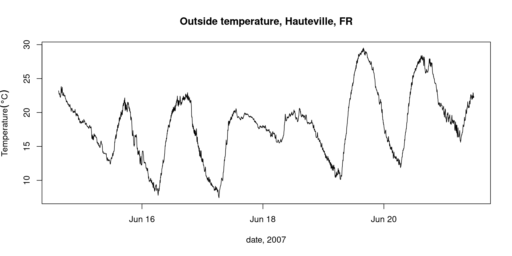
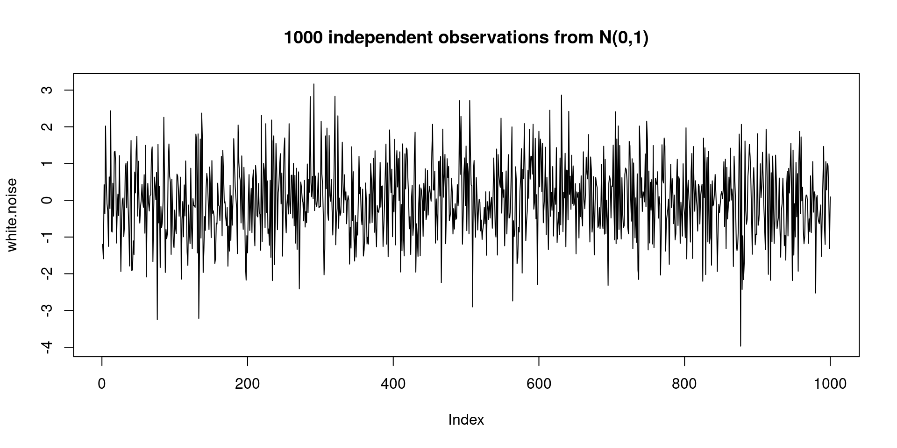
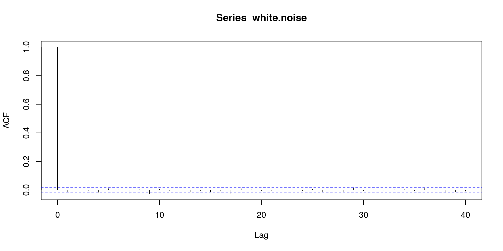
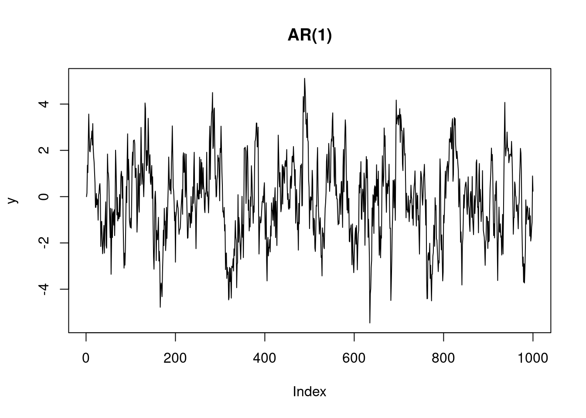
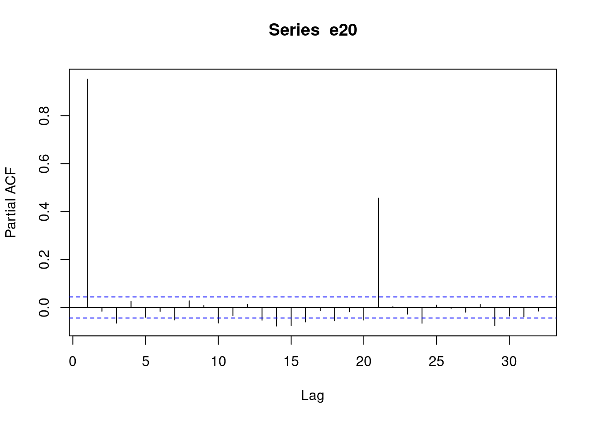
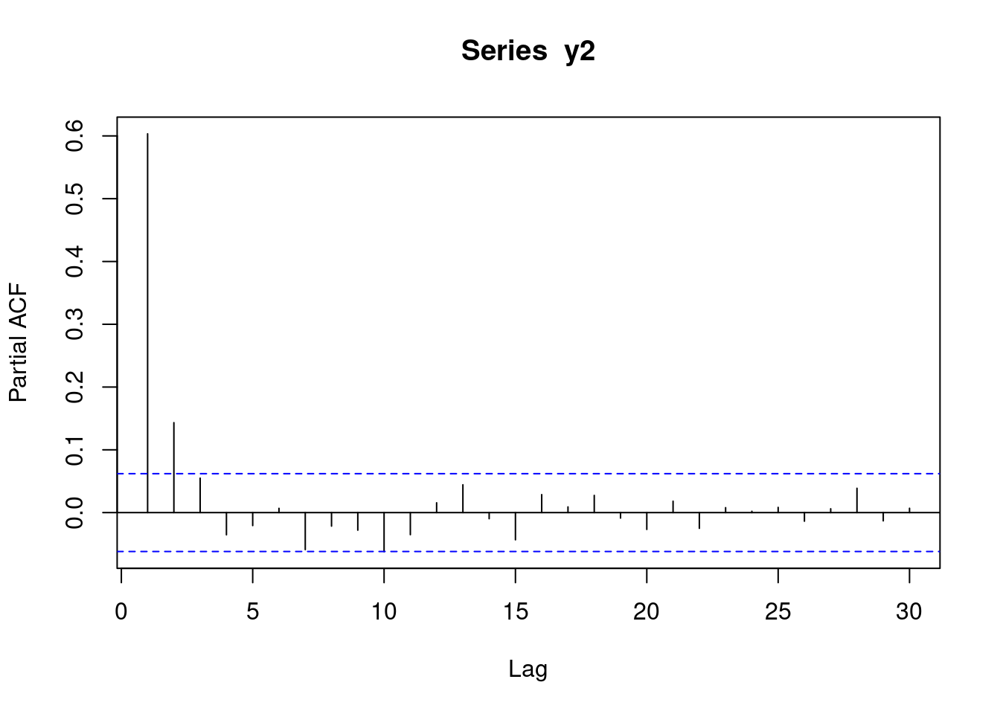

output in console, objects appear in Environment browser
1.2 Time series models
we will first look into time series models, because they are + simple + easy to write down + well understood
time series models are roughly divided in
time domain models and, which look at correlations and memory
frequency domain models, which focus on periodicities
Spatial equivalents are mostly found in (a), although (b) has spatial equivalences as well (e.g. wavelets).
some data
Consider the following process (\(\Delta t\) = 1 min):
load("meteo.RData") # should be available in the current working directoryls()# [1] "has_annotations" "meteo"names(meteo)# [1] "ID" "year" "julian.day" "time" # [5] "T.outside" "pressure" "humidity" "X" # [9] "windspeed" "std.dev." "Wind.dir" "std.dev..1" # [13] "TippingBucket" "mins" "hours" "date" # [17] "T.per"plot(T.outside~date, meteo, type='l', ylab =parse(text ="Temperature ({}*degree* C)"), xlab ="date, 2007")title("Outside temperature, Hauteville, FR")

Questions
how can we describe this process in statistical terms?
how can we model this process?
(how) can we predict future observations?
White noise, and AR(\(n\))
Perhaps the simplest time series model is white noise with mean \(m\):
\[y_t = m + e_t, \ \ e_t \sim N(0,\sigma^2)\]
\(N(0,\sigma^2)\) denoting the normal distribution with mean 0 and variance \(\sigma^2\), and \(\sim\) meaning distributed as or coming from.
\(t\) is the index \(t=1,2,...,n\) of the observation, and refers to specific times, which, when not otherwise specified are at regular intervals.
A white noise process is completely without memory: each observation is independent from its past or future. Plotting independent, standard normal values against their index (the default for plotting a vector in R) shows how a white noise time series would look like:
white.noise =rnorm(100)plot(white.noise, type='b')title("100 independent observations from N(0,1)")
white.noise =rnorm(1000)plot(white.noise, type='l')title("1000 independent observations from N(0,1)")

white.noise =rnorm(10000)plot(white.noise, type='l')title("10000 independent observations from N(0,1)")
We can look at the auto-correlation function of a white noise process, and find it is uncorrelated for any lag larger than 0:
plot(acf(white.noise))

Correlation x and y: \[
r(x,y) = \frac{\sum_{i=1}^{n}(x_i-\bar{x})(y_{i}-\bar{y})}{\sqrt{\sum_{i=1}^n (x_i-\bar{x})^2\sum_{i=1}^n(y_i-\bar{y})^2}}
\]
Autocorrelation
Autocorrelation (or lagged correlation) is the correlation between \(y_i\) and \(y_{i+h}\), as a function of the lag \(h\): \[
r(h) = \frac{\sum_{i=1}^{n-h}(y_i-\bar{y})(y_{i+h}-\bar{y})}{\sum_{i=1}^n (y_i-\bar{y})^2}
\] with \(\bar{y} = \frac{1}{n} \sum_{i=1}^n y_i\)
Random walk
A simple, next model to look at is that of random walk, where each time step a change is made according to a white noise process: \[y_t = y_{t-1} + e_t\] Such a process has memory, and long-range correlation. If we take the first-order differences, \[y_t - y_{t-1} = e_t\] we obtain the white noise process.
Further, the variance of the process increases with increasing domain (i.e., it is non-stationary)
Example random walk:
We can compute it as the cumulative sum of standard normal deviates: \(y_n = \sum_{i=1}^n e_i\):
Let \(e_t\) be a white noise process. A moving average process of order \(q\) is generated by \[y_t = \beta_0 e_t + \beta_1 e_{t-1} + ... + \beta_q e_{t-q}\]
Note that the \(\beta_j\) are weights, and could be \(\frac{1}{q+1}\) to obtain an unweighted average. Moving averaging smoothes the white noise series \(e_t\).
Moving average over monthly CO2 measurements on Maunaloa:
Wider moving average filters give new processes with + less variation + stronger correlation, over larger lags
AR(1), AR(p)
An auto-regressive (1) model, or AR(1) model is generated by \[y_t = \phi_1 y_{t-1}+e_t\] and is sometimes called a Markov process. Given knowledge of \(y_{t-1}\), observations further back carry no information; more formally: \[\Pr(y_t|y_{t-1},y_{t-2},...,y_{t-q}) = \Pr(y_t|y_{t-1})\]
\(\phi_1 = 1\) gives random walk, \(\phi_1=0\) gives white noise.
AR(1) processes have correlations beyond lag 1
AR(1) processes have non-significant partial autocorrelations beyond lag 1
As an example, we create (simulate) an AR(1) process with \(\phi_1=0.85\) and \(e\) drawn from the standard normal distribution (mean 0, variance 1).
n =1000y =rep(NA_real_, n) # initialise the variable: not needed, but good practicey[1] =0for (i in2:n) y[i] =0.85* y[i-1] +rnorm(1)plot(y, type ='l', main ="AR(1)")

plot(acf(y))
Compare the shape of the acf with that obtained from a MA process: different!
AR(p)
\[y_t = \phi_1 y_{t-1}+ \phi_2 y_{t-2} + ... + \phi_p y_{t-p} + e_t\] or \[y_t = \sum_{j=1}^p \phi_j y_{t-j}+e_t\] + The state of \(y_t\) does not only depend on \(y_{t-1}\), but observations further back contain information + AR(p) have autocorrelations beyond lag p + AR(p) have “zero” partial autocorrelations beyond lag p
y2 =rep(NA_real_, 1000) # initialise the variable: not needed, but good practicey2[1] =0; y2[2] =rnorm(1)for (i in3:1000) y2[i] =0.5* y2[i-1] +0.15* y2[i-2] +rnorm(1)plot(y2, type ='l', main ="AR(2)")
plot(acf(y2))
Partial correlation
Correlation between \(y_t\) and \(y_{t-2}\) is simply obtained by plotting both series of length \(n-2\), and computing correlation
Lag-2 partial autocorrelation of \(y_t\) and \(y_{t-2}\), given the value inbetween \(y_{t-1}\) is obtained by
computing residuals \(\hat{e}_t\) from regressing of \(y_t\) on \(y_{t-1}\)
computing residuals \(\hat{e}_{t-2}\) from regressing of \(y_{t-2}\) on \(y_{t-1}\)
computing the correlation between both residual series \(\hat{e}_t\) and \(\hat{e}_{t-2}\).
Lag-3 partial autocorrelation regresses \(y_t\) and \(y_{t-3}\) on both intermediate values \(y_{t-1}\) and \(y_{t-2}\)
etc.
Partial correlation can help reveal what the order of an MA(q) or AR(p) series is:
plot(pacf(e5, na.action = na.omit))
plot(pacf(e20, na.action = na.omit))

plot(pacf(y))
plot(pacf(y2))

Relation between AR and MA processes
Chatfield (Chatfield 2003) has more details about this. Substitute the AR(1) as follows \[y_t = \phi_1 y_{t-1} + e_t\]\[y_t = \phi_1 (\phi_1 y_{t-2} + e_{t-1}) + e_t\]\[y_t = \phi_1^2 (\phi_1 y_{t-3} + e_{t-2}) + \phi_1 e_{t-1} + e_t\] etc. In the limit, we can write any AR process as an (infinite) MA process, and vice versa.
Chatfield, Chris. 2003. The Analysis of Time Series: An Introduction. Chapman; hall/CRC.